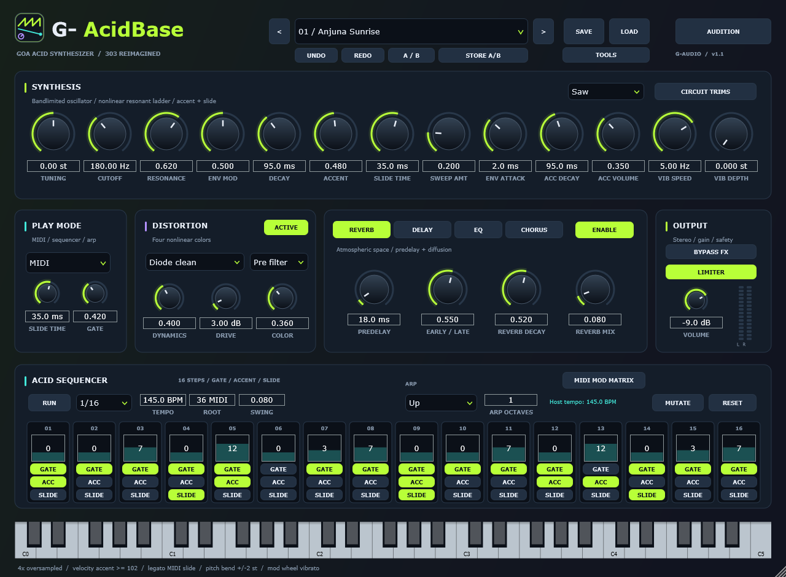
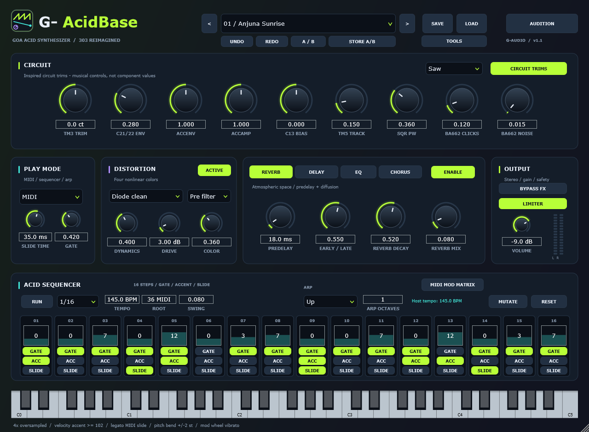
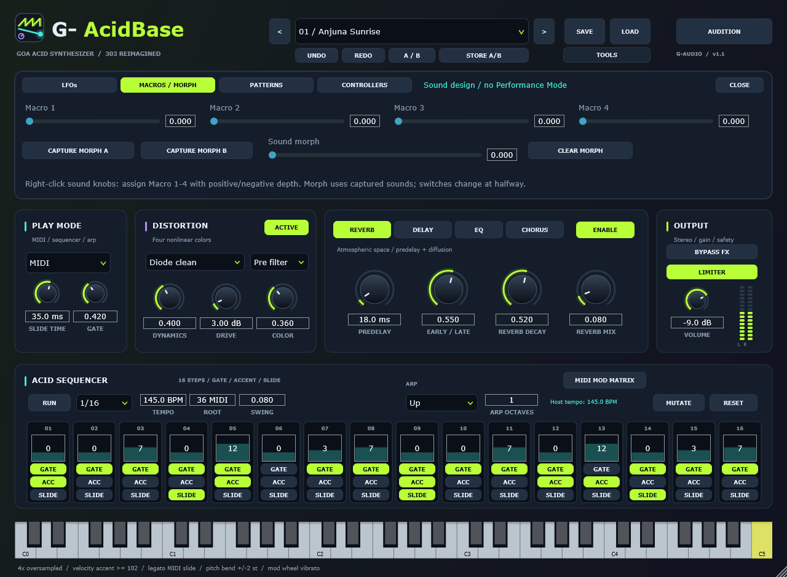

Bandlimited oscillator
Saw and square with glide, tuned for bass. No aliasing folds on high notes, because the oscillator is bandlimited rather than naïvely sampled.
VST3 + standalone · Windows x64 · free download
One bandlimited oscillator into a nonlinear resonant ladder filter, with the two gestures that define the sound — accent and slide — and a 16-step sequencer that carries gate, accent and slide per step. 4x oversampling keeps the resonance from aliasing when the cutoff is wide open, and 50 factory presets get you to a squelch before you touch a knob.

Sound
The signal path is deliberately small: one oscillator, one filter, one amp, and the accent and slide gestures that make an acid line move. Everything else in the window is there to bend that path.
Saw and square with glide, tuned for bass. No aliasing folds on high notes, because the oscillator is bandlimited rather than naïvely sampled.
A resonant ladder filter with the resonance the genre is built on, and a nonlinear stage that gives it the squelch rather than a clean biquad slope.
Per-step accent and slide, the two 303 gestures that separate a line that breathes from one that just plays notes. Accent hits the filter and the amp together.
The filter and distortion run oversampled with JUCE polyphase IIR half-band filters, and the reported latency is an integer number of samples, so a host can compensate.
A distortion panel with four characters for pushing the filter into the room, from a gentle saturation to a full-on squashed acid tone.
Reverb with predelay and diffusion, a tempo-synced ping-pong delay with filtered feedback, tone shaping and stereo movement — each on its own page in the FX panel.
Sequencer
The sequencer is the instrument. Every step carries a pitch, a gate, an accent and a slide flag, and the pattern banks let you keep several lines around and chain them into a longer arrangement.

Performance
Right-click any continuous control to bind a MIDI CC. Pickup and two relative encoder modes cover both kinds of hardware controller, and the mappings are remembered.
Assign parameters to macros, capture two states of the whole instrument and morph between them — the pattern you sketch becomes something you can sweep.
LFOs and a MIDI modulation matrix for movement that stays in time, including mod wheel vibrato and CC1-style expression.
Undo and redo across edits, plus A/B compare with a store action, so a tweak you regret is one shortcut away from being undone.
Export the pattern as a MIDI file and drag it straight out of the plugin into your DAW's timeline.
The mark beside the plugin name runs one cycle per beat of host tempo, and opens up with the resonance control — a small thing that tells you the transport is live.
Screens

Download
The installer puts the VST3 instrument and the standalone app where your DAW looks for them, and removes them again. Prefer to place the files yourself? The same ZIP holds the plugin folder. Nothing to activate, no account, no phone-home.
Download 1.1.1ZIP package·Installer·SHA-256 checksums·all files
G-AcidBase-Setup-<version>.exe and press INSTALL. It puts the plugin in the standard VST3 folder every DAW scans (Windows asks for administrator permission once) and the standalone app beside it. Prefer no administrator rights? Choose Custom folder and pick %LOCALAPPDATA%\Programs\Common\VST3\ if your DAW scans that user location. UNINSTALL, or --silent <folder> with no window at all, are both there.G-AcidBase-Windows-x64.zip and copy G-AcidBase.vst3 into %LOCALAPPDATA%\Programs\Common\VST3\, or add the unzipped folder to your DAW's VST3 scan paths. The machine-wide location is C:\Program Files\Common Files\VST3\, which needs administrator permission.
Every file in the archive is listed with its own SHA-256 in G-AcidBase/manifest.json,
and the archive also carries the verification reports the build produced. The published
SHA256SUMS.txt on the release is what the downloaded installer and ZIP are checked against.
Release notes
What's changed in each G-AcidBase release. Version links open the same notes linked by the plugin's update dialog.
Download 1.1.1ZIP package·Installer·SHA-256 checksums·all files
Specifications
Source and verification
The repository holds the engine, the editor, the test suite, the logo generator and the release packager. CMake fetches JUCE at a pinned commit, so a clean checkout builds the same thing the release contains.
A 50-preset render and audio check, and a feature suite covering MIDI learn, controller modes, macro and LFO audio, chance and ratchets, host PPQ seeks, dense automation at 44.1 / 48 / 96 kHz and DPI behaviour. Both gate the package.
The release ZIP carries a manifest of every file with its own SHA-256, so what you downloaded can be checked against what was built.
The mark is generated by a script and drawn as vectors in the editor from the same geometry, and a test compares the two renders pixel for pixel so they cannot drift.
Found something wrong? Open an issue on the repository — and if it is the host misbehaving rather than the plugin, say which DAW and version, because the two look the same from the outside.
Looking for a full Goa trance synthesizer rather than a bass line? GoaSynth covers supersaws, trancegate, arp, OTT and an AI patch designer.